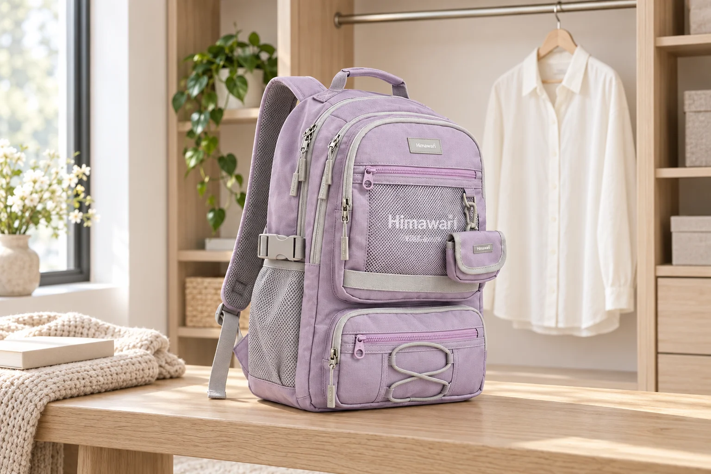

밝은 옷과 백팩을 함께 쓸 때: 색이 묻기 전에 살펴볼 자리

밝은 셔츠를 입은 날에는 백팩의 색만큼 옷과 맞닿는 자리도 눈에 들어옵니다. 가방에서 옷으로 색이 옮겨갈 수도 있고, 반대로 진한 옷의 색이 가방에 묻을 수도 있습니다. 특정 색상이 반드시 이염된다는 뜻은 아닙니다. 실제 사용 조건과 각 제품의 안내를 살피면서, 서로 다른 소재가 오래 닿는 상황을 줄이는 관리 이야기입니다.
색상보다 먼저 두 제품의 취급 안내를 확인합니다
가방과 옷의 라벨에 마찰이나 물기, 이염 관련 주의가 있는지 각각 살펴보세요. 원단 이름이 같더라도 염색과 가공 방식은 다를 수 있으므로 나일론이나 폴리에스터라는 이유만으로 색이 옮겨가지 않는다고 단정하지 않습니다. 밝은색 가방이 항상 안전하고 짙은색 가방은 항상 문제가 생긴다는 식으로 나눌 수도 없습니다. 특히 새 옷과 새 가방을 처음 함께 사용할 때는 긴 외출 전에 짧게 착용해 맞닿는 부분을 확인하면 상태를 알아보기 쉽습니다.
실제로 닿는 곳은 정면이 아니라 등판과 끈입니다
거울에서는 가방 앞면이 잘 보이지만, 옷에 닿는 것은 주로 어깨끈 안쪽과 등판, 가방 아래쪽입니다. 입고 움직였을 때 어느 부분이 셔츠나 겉옷에 계속 닿는지 살펴보세요. 허리 부근의 진한 데님이나 벨트 주변과 밝은 가방이 만나는 자리도 함께 확인합니다. 끈이 지나치게 느슨해 가방이 계속 흔들린다면 평소 짐을 넣은 상태에서 길이를 다시 맞춥니다. 꽉 조이는 것이 목표가 아니라 불편함 없이 반복되는 쓸림을 줄이는 것이 기준입니다.
젖은 상태로 오래 맞대어 두지 마세요
비나 땀으로 옷과 가방이 축축해졌다면 같은 면을 오래 맞댄 채 방치하지 않습니다. 귀가 후에는 둘을 분리하고 각 취급 안내에 맞춰 말리세요. 생활방수 원단이라는 설명은 이염 방지 성능을 뜻하지 않으므로 별개로 생각해야 합니다. 가방을 옷더미 사이에 끼워 두거나 젖은 겉옷 위에 얹어두는 습관도 피합니다. 물기를 닦을 때는 색이 묻어나는 천을 쓰지 않고 부드러운 깨끗한 천으로 가볍게 다루는 편이 좋습니다.
색이 보이면 세게 문지르기 전에 멈춥니다
옷이나 가방에 낯선 색이 보이면 먼저 서로 떨어뜨리고, 어느 위치에서 언제 발견했는지 사진으로 남겨두세요. 표면의 먼지인지 색이 옮겨간 것인지 확실하지 않은 상태에서 표백제나 강한 세정제를 바로 쓰지 않습니다. 가방은 취급 안내를 확인하고, 제거 방법이 명확하지 않으면 소재와 상태 사진을 함께 전달해 문의하세요. 옷은 의류의 관리 기준을 따릅니다. 자국을 지우려는 반복 마찰이 표면을 손상시킬 수 있으므로 급하게 같은 자리를 계속 문지르지 않는 것이 중요합니다.
라벤더 No.9291 사진은 색 조합의 참고입니다
대표 이미지에는 Himawari No.9291 라벤더와 아이보리 셔츠를 따로 배치했습니다. 실제 이염 시험이나 밝은 옷과의 사용을 보장하는 자료는 아닙니다. 온라인 사진은 화면과 조명에 따라 색이 달라 보일 수 있으므로 제품 선택 시 실제 색상 안내도 함께 확인해주세요. 사용 후 보관할 때는 옷과 가방이 서로 눌린 채 닿지 않도록 자리를 나누면 상태를 살피기 쉽습니다. 색을 즐기면서 오래 쓰는 습관은 강한 세척보다 접촉 상태와 물기를 먼저 알아차리는 데서 시작합니다.
참고·안내
- Himawari No.9291 제품 정보
- 실제 Himawari No.9291 제품 사진을 참조해 만든 AI 연출 이미지입니다. 주변 소품은 제품 구성에 포함되지 않으며 수납·성능 시험을 나타내지 않습니다.
자주 묻는 질문
생활방수 가방이면 이염도 걱정하지 않아도 되나요?
생활방수와 이염 방지는 다른 특성입니다. 가방과 옷의 취급 안내를 각각 확인하고 축축한 상태로 오래 맞대지 마세요.
이염 여부를 확인하려고 물을 묻혀 세게 문질러도 되나요?
임의의 강한 마찰 시험은 표면을 손상시킬 수 있습니다. 제조사의 시험·관리 안내가 없다면 무리하게 시도하지 말고 문의하세요.